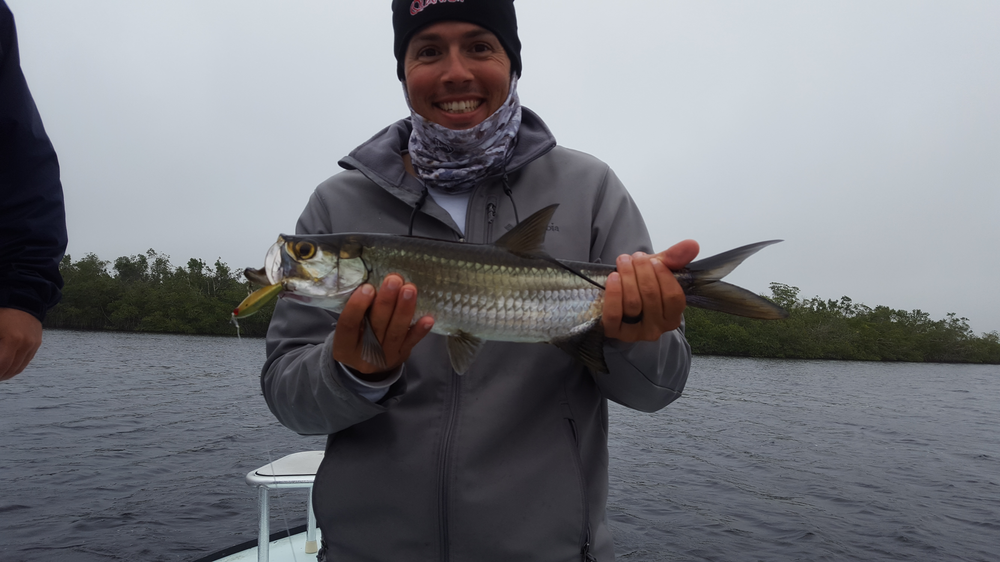

About Me
My name is Jose Perea. My friends and family call me Joey. I have a multiple college degrees, which include a Bacehlor's of Science in Computer Engineering, a minor in Geomatics Engineering, and Bachelor's of Art in English. I currently am Vice President of a Land Surveying company in Miami, Florida. I am trying to diversify my occupational portfolio by attaining some work in a computer field.
When I am not busy running the business or furthering my education, I enjoy spending time with my family. My favorite hobby is flats fishing or back country fishing. If I had it my way, I would fish every day. The Florida Everglades is where I spend most of my fishing time. I enjoy this area due to its seemingly endless combinations of creeks, rivers, and islands that continuously challenge any angler.